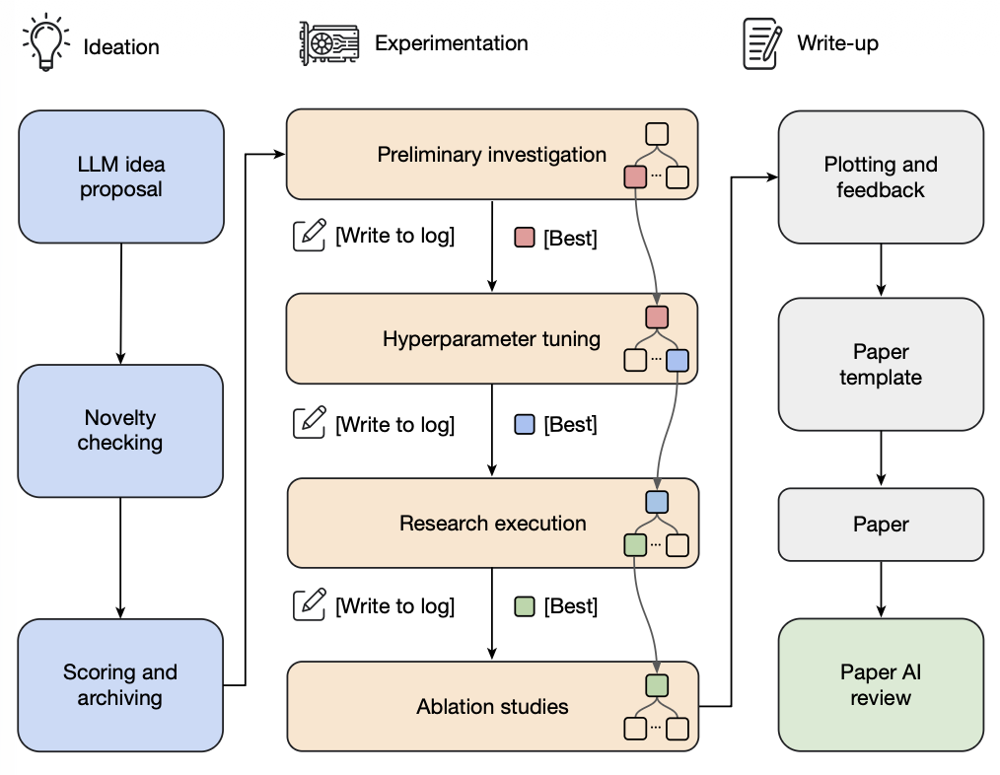

PART 5 · Harness 與自我改進
工作流設計：從手工到自動搜索
工作流的設計空間巨大。我們應該用算法去搜索，只靠手動設計遠遠不夠。
手工設計的工作流
講人話：工作流就係俾 AI 跟住做嘅做事流程表。好似新員工入職，你要同佢講「先做 A，再做 B，出問題搵 C 核對」。以前呢張流程表全靠人一步步寫，下面呢兩個例子就係人手寫出嚟嘅最強流程表。
Lu et al. 2026
AI Scientist
構建完整的科研自動化管綫
核心思想：將科學研究的完整流程交給一個 Agent 系統自動完成：從零開始執行一輪完整的研究循環。
管綫流程：
管綫流程：
- 提出研究想法
- →
- 寫程式碼
- →
- 跑實驗
- →
- 分析結果
- →
- 寫論文
- →
- 同行評審
關鍵創新：每一步都由 LLM 驅動，形成端到端的自動化科研系統。評審環節引入 LLM-as-judge 進行質素把關。

AI Scientist 的完整管綫：從研究構思到論文寫作與同行評審，全部由 Agent 自動化執行。（Lu et al. 2026）
Kulikov et al. 2026
Autodata
數據科學家 Agent：合成難度恰到好處的數據
核心思想：通過多角色協作，自動合成訓練數據，使數據難度精確可控：strong solver 能做出，weak solver 做不出。
角色體系：
角色體系：
Challenger出題者
Weak Solver弱解題者
Strong Solver強解題者
Verifier / Judge驗證裁判
關鍵創新：用難度差作為數據質素信號：只有同時滿足強者能解、弱者不能解的題目才被保留，確保合成數據對提升模型有最大價值。

Autodata 的多角色協作體系：Challenger 出題，Strong/Weak Solver 試解，Verifier 仲裁數據質素。（Kulikov et al. 2026）
ADAS: 自動化 Agent 系統設計
講人話：手寫流程表太攰，咁可唔可以畀 AI 自己幫 AI 設計流程表？ADAS 就係呢個思路：請一個設計師 AI，等佢不停畫新流程表、試跑、打分，好用嘅就留低。等於師父帶徒弟都自動化咗。
Hu et al. 2025
ADAS — Automated Design of Agentic Systems
將 Agent 設計本身視為優化問題
核心思想：讓一個 "Meta-Agent" 在 Agent 設計空間中自動搜索最優方案，取代手工設計 Agent 架構。這就是 "meta-agent search"。
工作機制：
1. Meta-Agent 先生成一個高層描述（Agent 的架構、工具使用、推理策略）
2. 將高層描述實現為可執行程式碼
3. 通過 self-refine 檢查新穎性：確保不是簡單重複已有方案
4. 在基準任務上評估，保留表現最好的設計
關鍵創新：用程式碼作為 Agent 設計的搜索空間表示，使設計可以被自動生成、修改和評估。
工作機制：
1. Meta-Agent 先生成一個高層描述（Agent 的架構、工具使用、推理策略）
2. 將高層描述實現為可執行程式碼
3. 通過 self-refine 檢查新穎性：確保不是簡單重複已有方案
4. 在基準任務上評估，保留表現最好的設計
關鍵創新：用程式碼作為 Agent 設計的搜索空間表示，使設計可以被自動生成、修改和評估。

ADAS 的 Meta-Agent Search：Meta-Agent 生成候選 Agent 設計→實現為程式碼→評估→迭代優化。（Hu et al. 2025）
AFlow：基於 MCTS 的工作流搜索
講人話：ADAS 係畀 AI 隨便發揮諗新方案，AFlow 就再進一步，用下棋 AI 同款嘅棋盤推演法（MCTS，蒙特卡洛樹搜索）去搵最優流程。好似 AlphaGo 落子前會喺腦入面推演幾百步「如果我行呢度，對方會點」，AFlow 都係喺腦入面推演幾百種流程改法，邊條路綫分高就往嗰邊深挖。
Zhang et al. 2025
AFlow
將 Agent 工作流表示為圖，用 MCTS 自動優化
核心思想：把工作流表示為有向圖：節點是 LLM 調用動作，邊是程式碼中的邏輯操作（條件分支、循環、數據傳遞）。然後用蒙特卡洛樹搜索（MCTS）在這個圖空間中自動尋找最優工作流。
MCTS 優化流程：
MCTS 優化流程：
- 初始化起始工作流作為搜索樹的根節點
- 用 soft mixture of score and uniform exploration 選擇待擴展節點（平衡利用與探索）
- 讓 LLM 生成修改後的工作流變體（添加/刪除/修改節點和邊）
- 在目標任務上執行並評估新工作流的表現
- 如果有改進，加回搜索樹中作為新的候選
- 重複直到 top-k 平均分穩定或達到計算預算
關鍵創新：將工作流設計問題轉化為樹搜索問題，讓 MCTS 的探索-利用平衡機制自動發現好的工作流結構，無需人類手工設計。

AFlow 的圖表示與 MCTS 搜索：工作流被表示為節點（LLM 動作）和邊（邏輯操作）的有向圖。（Zhang et al. 2025）
AFlow 實驗結果
| 方法 | 設計方式 | 搜索策略 | 核心優勢 |
|---|---|---|---|
| 手工設計 | 人類專家迭代 | 無（憑經驗） | 可解釋性強 |
| ADAS | Meta-Agent + 程式碼 | Self-refine | 自動化設計 |
| AFlow | 圖表示 + MCTS | 蒙特卡洛樹搜索 | 系統化搜索 + 穩定收斂 |

AFlow 在 QA、程式碼生成、數學推理等任務上的表現對比：系統化搜索優於手工設計和 ADAS。（Zhang et al. 2025）
逐步體驗：AFlow 的 MCTS 搜索過程
就緒
1
初始化
W₀: Plan → Execute
得分 52
從最簡單的單步工作流開始。沒有反思、沒有驗證、沒有並行。
2
擴展：LLM 提出變體
W₁: +Reflect61
W₂: +Verify58
W₃: +Decompose55
讓 LLM 基於 W₀ 生成三個修改方案，分別加入反思、驗證、任務分解。
3
評估 & 選擇父節點
W₁: 61 ← 選中
W₁ 得分最高（61 > 58 > 55），選它作為下一輪擴展的父節點。
4
再次擴展
W₄: Reflect×265
W₅: Reflect+Verify78 🏆
從 W₁ 擴展兩個方案：雙重反思 vs 反思+驗證組合。後者大幅領先！
5
剪枝 & 收斂
W₃: 55 ✗
W₆: 56 ✗
W₅: 78 ✓ 最優
分數低於閾值的工作流被剪枝。W₅（Plan → Execute → Reflect → Verify → Output）確認為搜索到的最優方案。比手工設計高出 50%！
核心洞見
- 搜索空間巨大：工作流的組合可能性遠超人類手動探索的能力範圍，手工設計只能觸及冰山一角
- 設計即搜索：把工作流設計當作搜索問題，用算法（如 MCTS）取代直覺去尋找好的解決方案
- 程式碼是通用語言：Harness 本質上就是編排 prompt、工具調用、子 Agent、控制流、記憶和工作流邏輯的程式碼
- 從 ADAS 到 AFlow 的進化：Agent 設計的自動化程度在不斷提升，從讓 LLM 設計進化到讓算法系統化搜索